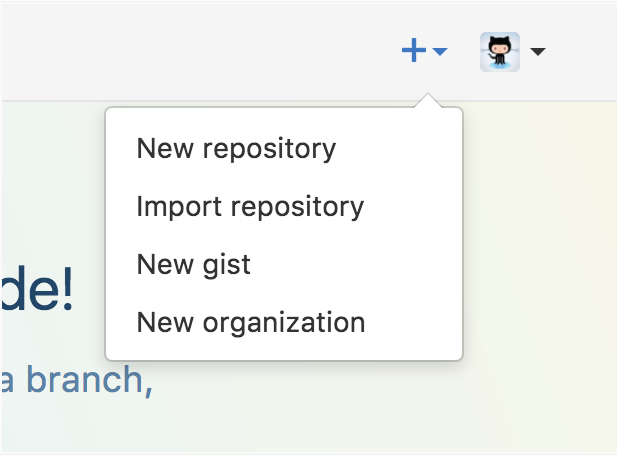
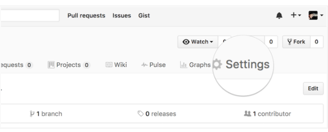
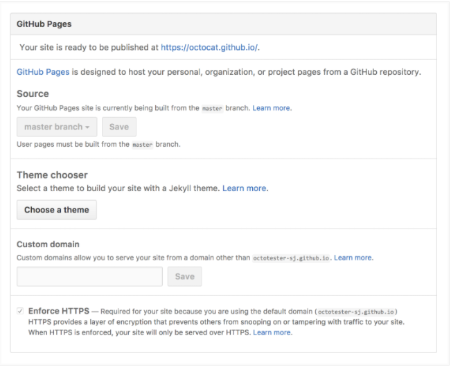
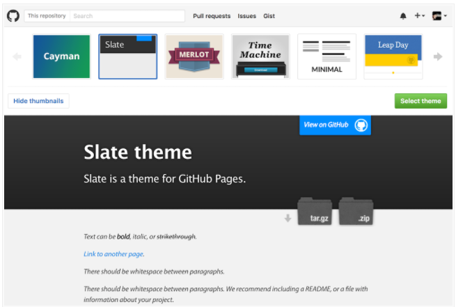
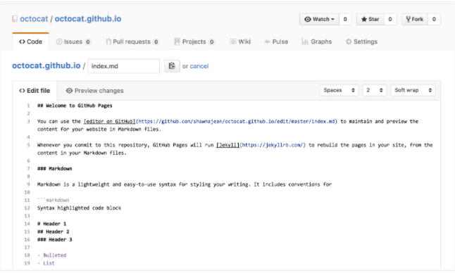
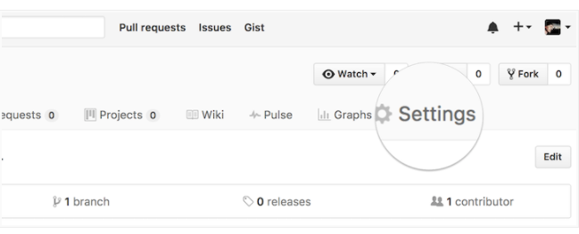
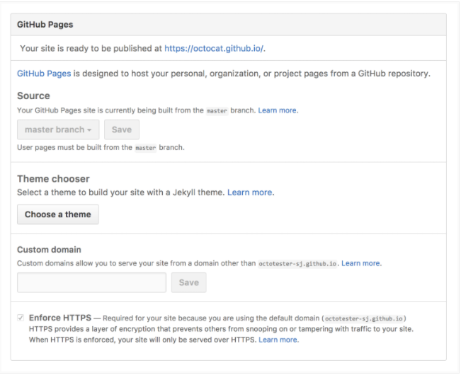
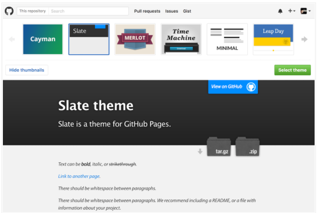
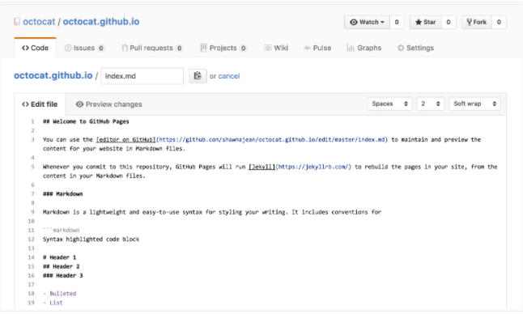

- Static web page and dynamic web page:
In communication between web browser(client) and web server(server), the most common protocol used in is HTTP. This protocol allows the browser sends an HTTP request to the server, and then the server sends an HTTP response to the browser. Two main type of response sent to browser are Static web page and Dynamic web page. There are some differences between both of them. They are related to:
-
To Static page, Information and data are static. They will not change until someone changes them. On the otherhand, data in Dynamic page can be changed or rendered continuously.
-
Language used: To Static page, languages used are simple languages such as HTML, JavaScript, CSS. To Dynamic, they are more complex languages/ techniques such as AJAX, ASP,...
-
Time for rendering data: Because of simplexity, Static page takes less time to load/render page than Dynamic page
-
Database: Usually, Static page has no involvement of database while Dynamic page needs database for management, storage and other advanced functions.
According to your aiming, you can choose which type of web page you want. For example, If you want your web page has the linking to the users (users can login, can comment,...), you should choose Dynamic page. If you just want to make a blog to talk about something you love to share with others, you can choose static. As for me, i just want to make a profile and story writing so i choose Static page. There are a lots of tools supporting you make a website that does not need you build big website project (Frontend + Backend).
- Github and other blog generation tools:
This article compared 10 best free website builders in 2020 Link. You can hear about WordPress or Wix several times. They are popular and famous builders. Others are Jimdo, IM Creator, Mozello,etc. These builders are different in Storage capacity, Security, Products for free. You can choose one of them according to your aiming. For example, WordPress is good at Blog, Wix is good at website, you want to make a website for selling something, you can choose Wix. Exactly, if your requirements are big, it can not be free as they said =))). Usually, to big company, they want high security level, they want to be free with their data, they are rich =)), they choose to create a website on their own by hiring a team for creating front-end, back-end, and buying their own servers or hiring servers on the Cloud.
Maybe, everyone in engineering is familiar with Git - Tool for version and source code management. Github is one of famous corporations for Git. They also support you to make a website on their architecture. This tool is suitable and quick for IT men who want to make a website on their own.
If your blog or website has important data, Github and 3rd builders can be not for you.
- Main steps:
You can find basic steps in document of Github in Getting started with Github pages. They are:
- You have to have a Github account. It is easy to sign up for you.
-
Create repository and configure something: Sign in and click "New repository" like this:

Give a special name to your website as the rule [username.github.io], with username is your github user name, for example my website name is "loglamo.github.io", this will be like a link to your website, and your repository also exists a repo "username.github.io". You can modify something in this repository.
 Nextly, you can choose some theme you want in Github recommendation by clicking "Settings" and choosing a theme.


And you can choose theme like this:

Basically, configuration is done. You can modify code as you want. I think if you have some knowledge of software developers, it will be better and faster for you to begin.
You can modify code in online Github like this:

Index file is the important file in your project. You can modify something in it and see changes. Remember to commit changes after your modifying, then your webpage is changed.
To developers, they will code offline at their IDE(Visual Studio Code, Sublime Text, Atom,...) to be easy to debug, then commit code to Github.
You can use the theme from Github or HTML+CSS templates from opensource web. I used Colorlib for my webpage. It will be easy for you to modify source code from templates. However, it can be more difficult if you are new bee in web coding. You have to know about how folder structure are? for example there will be css, javascript, fonts, contents folder and index.html file as the main file to run your web page. This is simple page. To complex websites, folder structures are more complex according to your techniques you use in.
You can create your logo as your style by using Photoshop. I used Canva to create my logo. You can use it via web or app, but i dont like to download and set up with Windows, i use web. =)).
Nextly, you can choose some theme you want in Github recommendation by clicking "Settings" and choosing a theme.


And you can choose theme like this:

Basically, configuration is done. You can modify code as you want. I think if you have some knowledge of software developers, it will be better and faster for you to begin.
You can modify code in online Github like this:

Index file is the important file in your project. You can modify something in it and see changes. Remember to commit changes after your modifying, then your webpage is changed.
To developers, they will code offline at their IDE(Visual Studio Code, Sublime Text, Atom,...) to be easy to debug, then commit code to Github.
You can use the theme from Github or HTML+CSS templates from opensource web. I used Colorlib for my webpage. It will be easy for you to modify source code from templates. However, it can be more difficult if you are new bee in web coding. You have to know about how folder structure are? for example there will be css, javascript, fonts, contents folder and index.html file as the main file to run your web page. This is simple page. To complex websites, folder structures are more complex according to your techniques you use in.
You can create your logo as your style by using Photoshop. I used Canva to create my logo. You can use it via web or app, but i dont like to download and set up with Windows, i use web. =)).
Try it!!!